论文标题：Beyond Instance-Level Alignment and Uniformity: Semantic Factor Learning for Collaborative Filtering 中文理解：超越实例级对齐与均匀性：面向协同过滤的语义因子学习 作者：Yajie Yu, Chenzhong Bin, Zhoubo Xu, Zhixin Zeng, Tongxin Xu, Cihan Xia, Jiafeng Wu 机构：一作来自桂林电子科技大学计算机科学与信息安全学院；合作作者包括约翰斯·霍普金斯大学 Electrical and Computer Engineering。当前目录名沿用本轮 worker 指定的“多校-SaFeAU”。 来源：arXiv:2605.31414，submitted 2026-05-29，Comments 标注 Accepted by KDD 2026。论文入口：arXiv:2605.31414 代码状态：论文首页给出并已核验可访问的 GitHub 仓库：MysticRealm/SaFeAU。本笔记只核验入口可访问，不评价代码完整性和复现实验是否已经全部可跑。
1. 背景和问题
SaFeAU 讨论的是隐式反馈协同过滤里一个很容易被训练目标掩盖的问题：系统只知道用户点过、买过、收藏过哪些物品，却不知道用户没有交互的物品到底是不喜欢、没看到，还是暂时没有机会发生行为。传统矩阵分解、BPR、采样式对比学习和许多图协同过滤方法，通常都把“已观测交互”当作正样本，把未交互物品当作负样本或负样本池。这个假设在数据稠密、曝光充分时还能近似成立；但在推荐系统常见的长尾、稀疏和隐式反馈场景中，未交互集合里往往混着大量潜在正样本。用户可能喜欢某个品牌、材质、风格、地点或内容主题，却只交互过其中很小一部分实例。如果训练时把所有未交互实例都推远，模型会学到过窄的偏好边界，尤其会伤害冷门物品、高阶相似物品和用户尚未暴露过的物品。
这篇论文把这种问题称为 instance-level learning paradigm 的局限。所谓实例级学习，是指模型直接围绕具体的 user-item pair 做拉近或推远：交互过的 pair 拉近，没交互过的 pair 推远。它的优点是简单、可扩展、容易落到矩阵分解或双塔打分上；缺点是监督信号太硬。对于用户 u 和物品 i，模型看见 (u,i) 是正样本，却不知道与 i 共享语义因子的其他物品 i' 是否也应该被看成潜在正样本。BPR 通过采样负例来学习 pairwise ranking，InfoNCE 通过更多负例来构造对比目标，AU 通过 alignment 和 uniformity 避免显式负采样，但它们共同依赖一个前提：正样本集合本身足够代表用户偏好。SaFeAU 的核心判断是，在稀疏 CF 中，真正缺的不只是更好的负例处理，而是更细粒度、更可泛化的正监督扩展。
GCN 系列协同过滤试图缓解这个问题。LightGCN 等方法通过用户-物品二部图上的邻域聚合，把二跳、三跳关系传递到用户和物品表示里，理论上可以捕捉更高阶的协同信号。例如用户点过物品 A，另一个用户也点过 A 和 B，那么 B 可能对第一个用户有价值。但图聚合也带来两个代价。第一，图构建和多层 message passing 对大规模推荐系统并不便宜，尤其是在边数巨大、需要频繁训练或增量更新时。第二，过平滑和噪声传播会把本来不同的用户/物品表示推向相似区域，导致细粒度偏好被多跳邻居污染。论文用 Figure 1 说明，同一张交互图中，GCN 的多跳聚合既可能引入无关节点，又不一定能有效连接真正相关的高阶物品；而语义因子匹配则尝试绕开图邻域，把“共享潜在属性”的未交互物品直接纳入正监督。
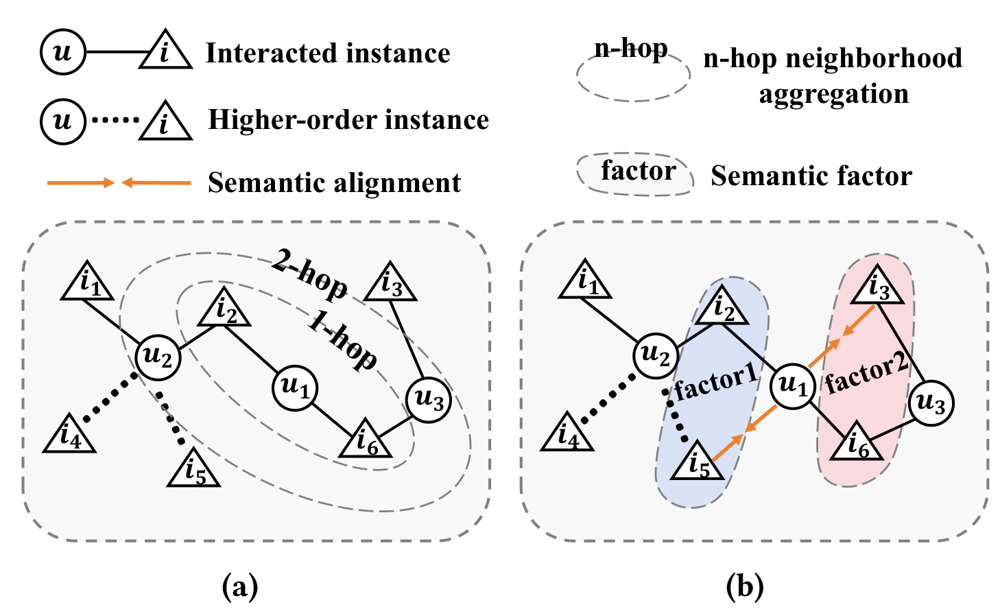
Figure 1 左侧画的是常规 GCN-based alignment：用户 u1 只和部分物品有直接边，多跳传播会沿交互图把其他节点卷入表示学习。这种路径依赖的好处是能利用高阶结构，坏处是路径越长越容易混入噪声，也越容易因为图卷积层数增加而过平滑。右侧画的是 semantic positive pairs alignment：模型不再依赖 u1 -> item -> user -> item 的图路径，而是先把物品路由到若干语义因子，再把与已交互物品共享语义因子的未交互物品看成 potential positive item。这个图的关键不是说语义因子一定有人工可解释的“品牌/材质”标签，而是说明训练监督从“具体实例是否交互”上移到“实例背后的共享语义因素”。一旦这个共享因素可靠，MF 这样没有图传播的模型也能吸收类似高阶连接的信息。
从推荐工程角度看，SaFeAU 选的切入点很现实。线上推荐常常希望保留矩阵分解或轻量双塔的训练/推理效率，但又希望获得图模型那种跨实例泛化能力。直接堆 GCN 层会增加训练成本和维护复杂度；只做更强的负采样，又可能把潜在正样本当成更“难”的负例进一步推远。SaFeAU 的设计目标是：保留 MF 的简洁推理路径，用 batch 内语义因子学习来扩展正样本，再用 alignment/uniformity 维持表示空间的几何质量。它不是一个内容特征模型，因为论文主要使用 ID embedding 和交互数据；也不是传统多兴趣模型，因为它学习的是 batch item set 上共享的语义因子，而不是只从单个用户历史里抽兴趣簇。它更像是在协同过滤内部构造一个“软语义邻接”，让潜在正样本通过语义因子而不是图边进入训练。
还要注意，论文选择 AU 作为底座，本身就是对推荐训练目标的一种取舍。很多工业系统会通过更复杂的负采样、曝光建模或 hard negative mining 来降低 false negative 影响，但这些方案需要额外日志、曝光口径或采样策略，且很容易和线上候选池分布耦合。SaFeAU 的路线更偏表示学习：先用 uniformity 维持全局空间的分散，再用语义因子把正样本集合变厚。这样做并不能替代曝光偏差建模，但它给了一个低依赖的训练增强方案，适合在只有交互日志和 ID embedding 的离线推荐框架里先验证。
2. 方法
2.1 从 CF 形式化到 AU 目标
论文先把协同过滤写成一个表示学习问题。用户集合为 U，物品集合为 I，观测到的正交互来自联合分布 p_pos(u,i)，用户和物品各自也有边缘分布 p_user(u) 与 p_item(i)。编码器 f(.) 把用户和物品映射到 d 维向量，归一化表示记作 \tilde f(.)。预测分数和欧氏距离分别是：
符号解释：s(u,i) 是用户与物品的内积打分，用于最终推荐排序；\tilde f(u) 和 \tilde f(i) 是归一化后的用户/物品表示；d(u,i) 是二者在单位球面上的距离。这个定义决定了后续所有训练目标的几何含义：正样本拉近就是降低距离或提高内积，负样本推远就是让表示在全局空间中不要塌缩到一起。
BPR 的目标是让一个正物品比采样负物品得分更高：
符号解释：i^- 是为用户 u 采样的负物品。BPR 的优点是直接优化相对排序，缺点是一次只看少量负样本，而且这些负样本可能包含用户真正感兴趣但未交互的物品。InfoNCE 把一个正样本和 M 个负样本放在同一个 softmax 分母中：
符号解释：\tau 是温度系数，j_n 是从物品分布采样的第 n 个负物品。论文指出，当 M=1 且 \tau=1 时，InfoNCE 与 BPR 在形式上接近；当 M 增大时，负样本覆盖更宽，但计算和 false negative 风险也随之变化。作者进一步在附录中分析，归一化 InfoNCE 在负样本数趋于无穷时会逼近 alignment 与 uniformity 的组合。因此 AU 目标可以看成一种不显式采样负例、直接塑造全局表示几何的选择。
AU 中的 alignment 是：
符号解释：L_align 只对观测正样本起作用，目标是让用户靠近其已交互物品。Uniformity 是：
符号解释：(u,u') 和 (i,i') 是独立采样的用户对和物品对。这个损失通过高斯势能鼓励表示在单位球面上均匀展开，避免所有用户或物品表示因为只做正样本拉近而塌缩。SaFeAU 沿用 AU 的原因很清楚：它不想继续依赖负采样来推远未交互物品，因为未交互物品中正好混有 false negatives；但单独 AU 仍然只拉近已观测正样本，无法把潜在正样本纳入 alignment。这就是后面 SFR、SFM 和 SPA 的位置。
2.2 Semantic Factor Routing (SFR)
SaFeAU 的第一步是 Semantic Factor Routing。它在每个训练 batch 的物品集合 I_b 上学习 K 个共享语义因子 {F_j}。这里的“语义”不是由文本、图片或人工标签监督出来的，而是从物品 embedding 的几何结构中软路由出来的潜在因素。作者借鉴 capsule network 的 dynamic routing：每个物品对每个因子都有一个 assignment weight，因子由 batch 内物品的加权和形成，再反过来根据物品与因子的匹配程度更新 routing logits。
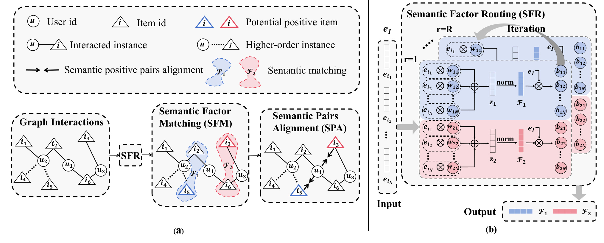
Figure 2 是理解整篇论文最重要的图。左侧 panel (a) 从交互图开始，先经过 SFR 得到语义因子，再由 SFM 找到与已交互物品共享因子的潜在正物品，最后用 SPA 把用户与这些潜在正物品对齐。这里的信息流不是传统 GCN 的邻居聚合，而是“物品集合 -> 语义因子 -> 语义匹配 -> 正监督扩展”。右侧 panel (b) 展示 SFR 的迭代机制：输入是 batch 内物品 embedding，路由权重 w_ij 控制每个物品对因子 F_j 的贡献，归一化后的因子再更新 logits b_ij。这张图说明 SaFeAU 不是先验地给物品分组，也不是固定按 embedding 维度切分语义，而是在每个 batch 内通过软分配动态形成因子。
SFR 的四个核心公式如下：
符号解释：b_ij 是物品 i 到语义因子 j 的 routing logit，w_ij 是 softmax 后的分配权重。对同一个物品，所有因子上的权重相加为 1，因此它可以同时部分属于多个因子，但会更偏向若干强因子。
符号解释：z_j 是第 j 个因子的未归一化表示，它把 batch 内所有物品 embedding 按 w_ij 加权求和。权重大的物品更能决定该因子的方向。
符号解释：F_j 是归一化后的语义因子 embedding。归一化让它和物品 embedding 处于同一个单位球面上，后续可以直接用内积或距离计算相似性。
符号解释：如果物品 i 与因子 F_j 的内积高，下一轮 b_ij 会增加，i 会更强地路由到该因子。这个过程重复 r 轮，使因子和物品分配逐步互相强化。作者强调 K 和 r 都是小常数，所以 SFR 增加的是 batch 级线性项，而不是图边级 message passing。
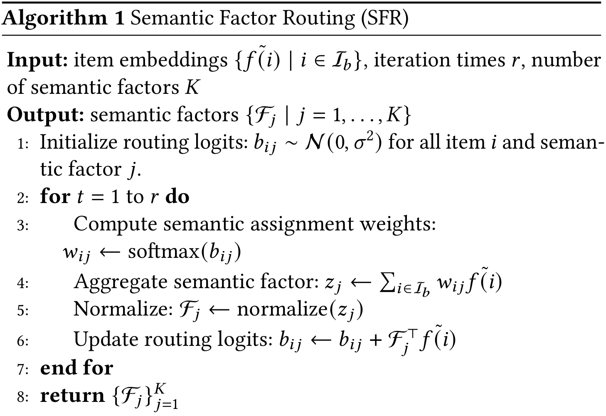
Algorithm 1 把上述公式串成一个训练时可执行的过程：先随机初始化 b_ij，然后在每轮中计算 softmax 权重、聚合 z_j、归一化得到 F_j、再用因子与物品的相似度更新 logits。这个算法框值得单独保留，因为它说明 SaFeAU 的语义因子不是一个额外可学习表，也不是全量物品上的离线聚类，而是嵌在 mini-batch 训练里的动态路由。这样做的好处是内存和计算更贴近 DirectAU 这类 batch-wise 训练框架；潜在风险是 batch 组成会影响因子稳定性，尤其在热门物品、冷门物品和长尾类别分布差异很大时，同一物品在不同 batch 中的语义邻居可能并不完全一致。复现时还应检查 routing logits 的初始化方差、batch size 和随机种子，因为这些因素会改变早期因子方向，进而影响后续潜在正样本集合。
2.3 Semantic Factor Matching (SFM)
有了每个物品对语义因子的分配权重之后，SFM 负责把“共享语义因子”翻译成潜在正样本。对物品 i，先取权重最高的 top-k 个因子：
符号解释：\mathcal K_i 是物品 i 最相关的语义因子集合，k 控制每个物品暴露多少语义面。如果 k 太小，容易漏掉多属性相似；如果 k 太大，几乎所有物品都共享某些弱因子，噪声会增加。
接着定义语义增强集合：
符号解释：\mathcal N_i 是与物品 i 共享足够多 top-k 因子的 batch 内其他物品；\delta 是共享因子数量阈值。对于一个观测交互 (u,i)，如果 i' 属于 \mathcal N_i，SaFeAU 就把 (u,i') 构造成潜在正样本。这个定义的关键在于它不是随机加正样本，也不是把所有相似物品都加进来，而是要求共享的强语义因子数量达到阈值。论文后续实验显示，\delta=2 往往比随机扩展和严格要求共享全部 top-k 因子更稳。
SFM 的训练意义可以这样理解：原本 u 只通过 i 获得一个正监督点，现在 i 的语义邻居也会成为 u 的软正样本。它模拟了“用户喜欢某个语义因素，而不是只喜欢某个 item ID”的假设。与图邻域相比，SFM 不需要经过用户-物品-用户-物品的多跳路径，也不需要显式构建归一化邻接矩阵；与内容相似度相比，SFM 只依赖协同过滤 embedding，适合没有文本/图片/属性侧信息的 ID-only 场景。它真正依赖的是 embedding 是否已经包含足够的协同语义，以及 batch 内能否出现有意义的候选相似物品。
2.4 Semantic Pairs Alignment (SPA)
SFM 只是找出潜在正样本，SPA 才把这些样本变成优化目标。论文定义语义正样本对齐损失：
符号解释：对每个观测正样本 (u,i)，模型遍历 i 的语义增强集合 \mathcal N_i，把用户 u 拉向这些潜在正物品 i'。前面的 1/|\mathcal N_i| 做平均，避免某些物品因为语义邻居太多而主导损失。这个损失与普通 L_align 的区别是，普通 alignment 只拉近已发生交互的 pair，而 semantic alignment 拉近未交互但语义一致的 pair。
从训练链路看，SFR、SFM 和 SPA 之间存在一个闭环：SFR 先把 batch 内物品映射到因子空间，SFM 用这些因子判断哪些未交互物品可以临时作为正监督，SPA 再把新增正监督反馈到用户和物品 embedding 的优化中。下一轮训练时，embedding 变化又会影响 SFR 的路由结果。因此 SaFeAU 不是在一个固定相似度图上做样本扩展，而是在训练过程中动态更新“哪些物品共享语义”。这也解释了为什么作者没有把它写成离线 item clustering：离线聚类通常和当前模型目标脱节，而 batch routing 会随推荐表示一起变化。
这个闭环有两个边界条件。第一，SFR 的因子来自当前 batch，所以 batch 采样策略会影响可见的候选语义邻居。如果 batch 内物品过于同质，SFM 可能产生过多弱区分的正样本；如果 batch 过于随机且稀疏，真正共享语义的物品未必同时出现。第二，SPA 的新增正样本没有显式置信度建模，所有进入 Ni 的物品在平均项里被同等处理。实际落地时可以考虑把共享因子数量、因子权重和历史曝光信息转成 soft weight，而不是只用硬阈值 delta。论文当前选择硬阈值，是为了保持方法简单并让消融更清晰。
最终训练目标是：
符号解释：L_align 负责保持已观测交互的基本正样本约束；L_uniform 负责把用户和物品表示均匀铺开，避免塌缩并减少负采样依赖；L_align^{semantic} 负责把 SFM 找到的潜在正样本纳入训练；\gamma_1 和 \gamma_2 分别控制 uniformity 与语义正样本对齐的权重。训练完成后，推荐仍然使用用户和物品 embedding 的点积打分。也就是说，SaFeAU 的额外复杂度主要发生在训练阶段，推理阶段并不需要保留语义路由图或多跳 GCN。
论文在附录中还给了一个正样本扩展的泛化直觉：若 N 个正样本独立来自 p_pos，经验 alignment 与总体 alignment 的估计误差以 O(N^{-1/2}) 量级下降。直观上，SFM/SPA 增加了可用正 pair 数量，使 alignment 估计更稳定。当然，这个理论支持依赖“新增 pair 是高质量潜在正样本”的前提；如果 SFM 找到的是伪正样本，正样本数量增加反而会污染用户偏好。因此论文必须用 Table 5 和 Table 6 证明 SFM 不是单纯靠随机加样本获益。
2.5 联合目标、复杂度和推理路径
SaFeAU 的工程卖点是：它把高阶协同信号放到语义因子和正样本扩展里，而不是放到图卷积里。复杂度对比可以概括为三层。第一，GCN-based 方法需要图构建和邻接归一化，通常涉及 O(2|E|)；SaFeAU 作为 MF-based 方法不需要这一步。第二，GCN 多层传播需要 O(2|E|Ld) 或相关变体，边数、层数和 embedding 维度都会进复杂度；SaFeAU 没有 graph convolution。第三，SaFeAU 的损失计算包含 AU 的 batch 内 pairwise 项和 SFR 的 O(rKBd) 线性项，论文写作 O(Bd+rKBd+2B^2d)。只要 K 和 r 维持较小，额外成本就比图卷积轻。
还有一个实现细节值得单独强调：SaFeAU 的潜在正样本只在训练中改变监督集合，并不改变最终召回时的候选生成方式。训练阶段，SFR/SFM/SPA 让用户 embedding 同时吸收已交互物品和语义邻居的信息；推理阶段，系统仍然可以按常规 MF 或双塔流程，对用户向量和物品向量做内积排序。这种设计降低了部署风险，因为线上服务不需要实时执行 routing，也不需要为每个请求动态构建语义因子。换句话说，SaFeAU 把复杂度放在离线训练，把线上接口保持为已有推荐系统熟悉的向量检索/打分接口。
从目标函数角度看，L_align、L_uniform 和 L_align^{semantic} 三者承担的是不同约束。L_align 保证模型不忘记真实观测交互；L_uniform 防止表示空间因为正样本拉近而坍缩，并间接替代部分负采样效果；L_align^{semantic} 则把语义邻居变成额外正监督。三者缺一不可：没有 L_align，模型会失去对真实点击/购买的锚定；没有 L_uniform，新增正样本可能导致局部簇过密；没有 L_align^{semantic}，SaFeAU 就退化成普通 AU，仍然无法利用未交互集合里的潜在正样本。
这也解释了为什么 SaFeAU 的方法章虽然看起来有多个模块，但核心假设其实只有一句话：用户偏好可以通过共享语义因子在物品之间传播，而这种传播不一定要依赖图卷积的多跳邻域。SFR 负责发现可传播的因子，SFM 负责决定传播边界，SPA 负责把传播结果变成可优化的几何约束。只要这三步中的任一步质量不足，最终指标都会受影响；因此复现实验不能只看最终 loss 是否下降，还应记录每个 batch 的潜在正样本数量、不同阈值下的扩展率，以及扩展样本在验证/测试交互中的命中情况。
实现时还应把潜在正样本的构造限制在训练 batch 内这一点写清楚：SaFeAU 并不是为每个用户在全量物品库中枚举所有语义相似物品，而是在当前 batch 里生成临时增强 pair。这样能控制计算量，也让新增监督更像一种 mini-batch regularization。代价是增强样本覆盖率受 batch size 和采样器影响，若业务数据极端长尾，可能需要分层采样或按品类/时间混合采样来提高语义邻居出现概率。
需要注意的是，Table 1 只分析时间复杂度量级，并不自动保证实际实现一定更快。AU 中的 2B^2d batch 内 pairwise 项可能受 batch size 和矩阵乘法实现影响；SFR 的 rK 虽是小常数，但如果为了更细语义把 K 或 r 调得很大，也会增加训练开销。论文后续用 Appendix Table 8 给出真实训练时间，说明 SaFeAU 在实验设置下确实接近 MF-based 方法，明显快于 GCN-based 方法。
3. 实验结果
3.1 数据集、协议和复现口径
实验围绕六个问题展开：主结果是否优于 SOTA，SaFe 组件是否能接入不同 CF 模型，SFM 的匹配策略是否有效，SFM 找到的潜在正样本是否比随机扩展更好，SaFeAU 是否改善正样本对齐，以及超参数对效果的影响。数据集包括 Gowalla、Yelp2018，以及 Amazon 的 Toys-and-Games 和 Beauty 子集。论文沿用常见处理方式：去除重复交互，只保留至少 5 次交互的用户和物品；对每个用户做 80%/10%/10% 的 train/validation/test 划分；测试时使用 full-ranking strategy，即对每个测试用户排序所有未交互物品，而不是只在采样负例上评估。指标是 Recall@K 和 NDCG@K，每组实验用 5 个随机种子取平均，并用 t-test 标注显著性。
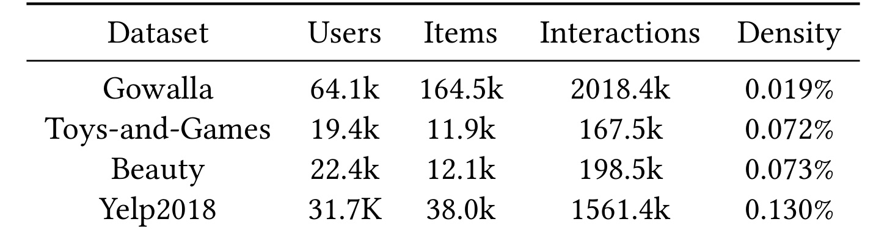
Table 3 说明这篇论文确实在稀疏 CF 场景里验证：Gowalla 有 64.1k 用户、164.5k 物品和 2018.4k 交互，密度只有 0.019%；Toys-and-Games 与 Beauty 的密度分别为 0.072% 和 0.073%；Yelp2018 的密度也只有 0.130%。这组数据让 false negative 问题更有现实意义，因为未交互集合非常大，用户没点过的物品远多于点过的物品。如果一个模型把这些未交互物品一律当负样本，训练信号很容易偏向“保守地只推荐已知相邻实例”。SaFeAU 的实验选择因此和方法假设一致：它不是在稠密评分矩阵上证明语义因子，而是在长尾隐式反馈上证明扩展正监督的价值。
实现上，论文使用 RecBole 统一实现方法，Adam 优化，最大 300 epoch，validation NDCG@20 连续 10 epoch 下降则 early stop。embedding size 固定为 64，learning rate 为 1e-3，Beauty batch size 为 256，其他三个数据集 batch size 为 1024。SaFeAU 的默认 encoder 是简单 user/item ID embedding table，说明它不是靠复杂 encoder 获胜。\gamma_1 在 [0.1,0.5,2,7,10] 中搜索，\gamma_2 在 [0.001,0.01,0.1,10] 中搜索，K 在 {1,2,4,7} 中搜索，top-k 在 {1,2,3,4} 中搜索，routing iteration r 在 {1,...,8} 中搜索。
3.2 主结果
主结果对比了 GCN-based 的 LightGCN、GraphAU、FourierKAN-GCF、SimGCF，以及 MF-based 的 BPR-MF、DirectAU、LightGODE、LightCCF。这个 baseline 组合比较合理：它既包括经典图协同过滤，也包括 AU/对比学习方向的强 MF 变体。SaFeAU 在四个数据集的 Recall/NDCG 指标上都排第一，且相对最强 baseline 的提升在不同指标上从 1.28% 到 6.24% 不等。
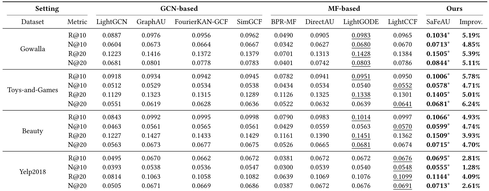
Table 2 的几个细节值得拆开看。第一，Gowalla 和 Toys-and-Games 这类更稀疏数据集上，SaFeAU 的提升更明显。例如 Gowalla 上 R@20 从最强 baseline 0.1428 提升到 0.1505，N@20 从 0.0803 提升到 0.0844；Toys-and-Games 上 N@20 从 0.0641 提升到 0.0681。第二，在 Beauty 和 Yelp2018 上，提升仍然存在但幅度更小，说明当数据相对稠密时，false negative 缓解仍有效，但边际收益没有极稀疏场景那么大。第三，MF-based 强方法并不弱，LightGODE 和 LightCCF 在多个位置已经超过或接近 GCN 方法。这反而强化了 SaFeAU 的论点：如果一个轻量 MF/AU 框架能通过语义正样本扩展获得更好指标，就不一定需要用更贵的图卷积来捕捉高阶信号。
当然，Table 2 不能单独证明“语义因子”本身有效，因为主模型同时用了 AU、SFR、SFM、SPA 和多任务目标。它证明的是整套 SaFeAU 在论文设定下优于强基线。要进一步拆解贡献，需要看兼容性、消融、随机扩展对比和潜在正样本质量验证。
3.3 兼容性和消融
SaFeAU 的 SFR/SFM 不只是作为完整框架使用，作者还把 SaFe 组件接入 DirectAU、LightCCF、BPR-MF 和 LightGCN，测试它是否是 model-agnostic plugin。如果一个组件只能在作者自己的完整目标里有效，说明它可能依赖特定损失组合；如果加到不同 backbone 上都有效，就更能说明“用语义因子扩展正监督”本身有价值。
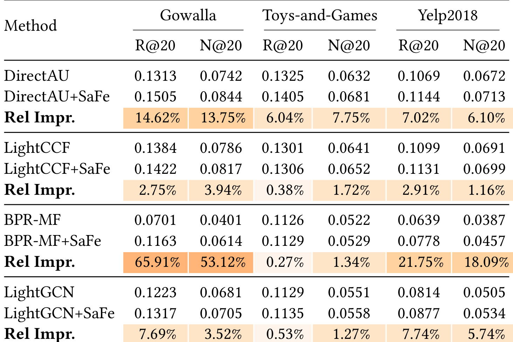
Table 4 显示，DirectAU+SaFe 在 Gowalla 上 R@20 相对提升 14.62%、N@20 提升 13.75%，在 Toys 和 Yelp2018 上也有 6%-7% 左右或更小但稳定的收益。BPR-MF+SaFe 在 Gowalla 上提升尤其大，R@20 从 0.0701 到 0.1163，N@20 从 0.0401 到 0.0614；Yelp2018 上也有 21.75% 和 18.09% 的相对提升。这个现象说明，越基础、越依赖原始实例级监督的模型，越可能从语义正样本扩展中受益。LightCCF 和 LightGCN 本身已经有更强的表示或图信号，收益相对小，但仍然为正。工程上这意味着 SaFe 思路不一定要替换现有模型，也可以作为训练监督增强模块先接入已有 CF backbone 做验证。
接着，论文比较了 SFM 的四种策略：None-SFM 不加入未交互潜在正样本；Random-SFM 随机选择未交互物品作为潜在正样本；Strict-SFM 要求共享全部 top-k 语义因子；SFM 只要求共享至少 \delta 个语义因子。
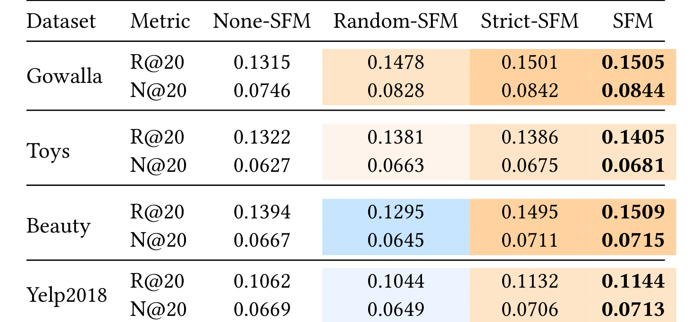
Table 5 最有意思的是 Random-SFM 在 Gowalla 和 Toys 上也能变强。这说明在极稀疏场景中，原始未交互集合里确实有大量 false negatives，甚至随机放松一部分未交互物品的负样本地位，也可能比完全不扩展正样本更好。但 Random-SFM 在 Beauty 和 Yelp2018 上变差，说明随机扩展不能作为通用方案：数据稍微稠密后，未交互集合里的真负样本比例和噪声风险都会上升。Strict-SFM 与 SFM 都稳定优于 None-SFM，而 SFM 又优于 Strict-SFM，说明“适度共享语义因子”比“必须完全同因子”更平衡。阈值太严会覆盖不足，阈值太松会引入伪正样本。表中 Random-SFM 在稀疏集上变强而在较稠密集上变弱，也提醒我们不能把所有未交互样本都简单降权；SFM 的价值在于用共享强因子控制扩展边界，让模型获得额外正监督的同时不过度污染偏好。
3.4 语义匹配质量和正样本距离
为了回答“是不是随便加一点正样本就能涨”，论文直接评估 SFM 找到的潜在正样本质量：把训练集上识别出来的 potential positive pairs 拿去和测试集 ground-truth positives 对比，用 HR@10、NDCG@10 和 Recall@10 衡量。这一步很关键，因为主任务指标提升可能来自正则化、训练扰动或样本量变化；只有潜在正样本本身质量更高，才能支撑“语义因子匹配”这一解释。
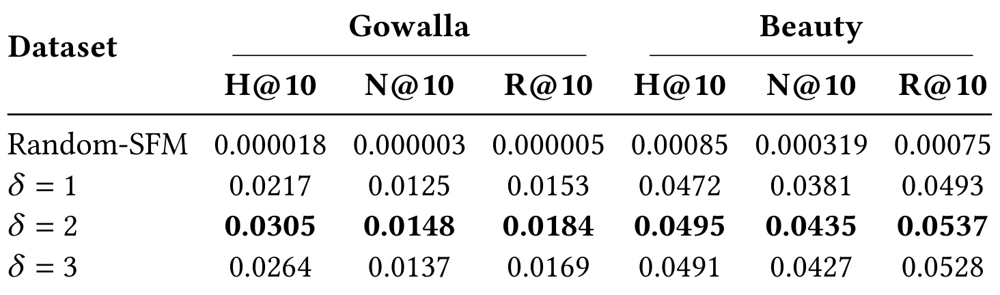
Table 6 显示，Random-SFM 的命中率极低，而 SFM 在 \delta=1,2,3 时都明显更高，并且 \delta=2 在 Gowalla 和 Beauty 上都达到最佳或接近最佳。以 Gowalla 为例，Random-SFM 的 H@10 只有 0.000018，而 \delta=2 的 H@10 为 0.0305；Beauty 上 Random-SFM 的 H@10 为 0.00085，\delta=2 为 0.0495。这个表说明 SFM 不是单纯扩大正样本集合，而是在未交互集合中挑出更可能成为真实正反馈的物品。对线上系统来说，这类机制如果接入训练，需要继续做曝光偏差和时间切分验证，因为测试集正样本也只是未来观测到的交互，不等于完整真实偏好；但相对随机扩展，SFM 的证据更有说服力。
论文还测量了训练集和测试集正样本 pair 的平均距离。距离越小，表示用户和正物品越靠近；train-test gap 越小，说明模型在训练正样本和测试正样本上的对齐差异越小，泛化更好。
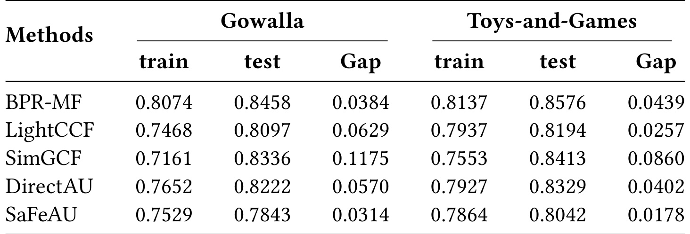
Table 7 中，SaFeAU 在 Gowalla 上 train distance 为 0.7529，test distance 为 0.7843，gap 为 0.0314；Toys-and-Games 上 gap 为 0.0178，都是表中最小。SimGCF 的训练距离很低，但测试距离明显上升，Gowalla gap 达 0.1175，Toys gap 为 0.0860。这与论文关于过平滑和泛化的讨论相呼应：一个模型可能在训练交互上把表示压得很近，但如果这种接近依赖训练图结构或局部噪声，到了测试交互就不能保持。SaFeAU 通过语义潜在正样本扩展 alignment，让用户表示更靠近一组共享语义因子的物品，而不是只靠已观测实例，因此 test positive distance gap 更小。
3.5 参数敏感性和效率
SaFeAU 有几个关键超参数：uniformity 权重 \gamma_1、semantic alignment 权重 \gamma_2、语义因子数 K、每个物品选取的 top-k 因子数，以及 SFR routing iterations r。这些参数决定了表示空间展开强度、潜在正样本扩展强度和因子粒度。
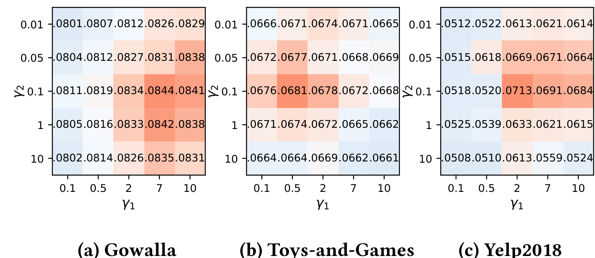
Figure 3 展示 \gamma_1 和 \gamma_2 对 NDCG@20 的影响。论文解读是，在多数情况下 uniformity loss 的影响更大，因为稀疏交互下首先要保证用户和物品表示能覆盖足够广的语义空间，不能因为正样本拉近而过度塌缩。这个结果也符合 AU 的直觉：如果表示空间本身没有均匀展开，SFM 产生的语义因子也可能变得混乱。\gamma_2 仍然重要，但它更像是在已有几何空间上增加语义正样本牵引；如果 uniformity 太弱，潜在正样本对齐可能只是把更多点拉到局部密集团里。对复现者来说，这意味着优先调 \gamma_1，再细调语义 alignment 权重，可能比盲目扩大潜在正样本数量更稳。若在自有数据上发现 \gamma_2 很大才有效，反而要警惕 SFM 是否在弥补基础 embedding 质量不足；若 \gamma_1 太大导致指标下降，则可能说明表示被过度推散，正样本 alignment 难以重新聚合用户兴趣。
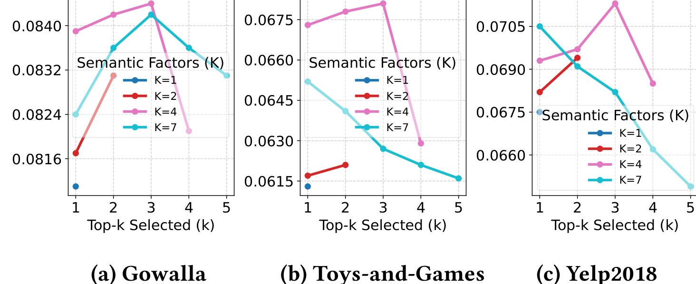
Figure 4 显示，论文实验中 K=4 且 top-k 为 3 时整体效果最好。这个结论有两个含义。第一，语义因子数量不是越多越好。K 太小会把多种物品属性混在一起，无法区分不同语义；K 太大又可能把 batch 内物品切得过碎，使共享因子不足、正样本扩展变少或变噪。第二，top-k 也不是越大越好。选太少会漏掉多面相似，选太多会让原本弱相关的物品共享因子，降低 SFM 精度。论文里的最佳点支持一种中等粒度语义：四个因子提供基本语义多样性，top-3 允许物品有多个强属性，但仍保留过滤作用。这个结论不能机械迁移到所有业务，因为商品、短视频、本地生活和新闻推荐的物品属性复杂度不同；但它给了一个调参方向，即先找能稳定覆盖主要语义面的较小 K，再通过 top-k 和 delta 控制潜在正样本扩展率。
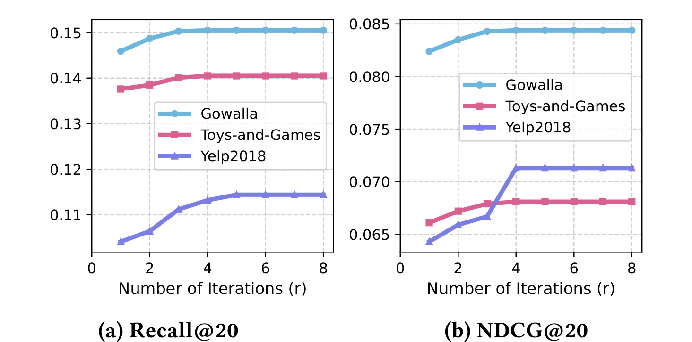
Figure 5 显示，r 增加到约 4 之后，Recall@20 和 NDCG@20 基本进入平台期，继续增加 routing 轮数只有边际收益。这个结果对工程落地很重要，因为 SFR 每多一轮都要重新计算 assignment、factor aggregation 和 logit update。如果 r=4 已经能稳定形成语义因子，就没有必要为了微小指标波动增加训练时间。它也说明 SFR 的动态路由不是一个需要长时间迭代收敛的复杂优化，而更像一个轻量 batch 内 refinement。对工程复现来说，可以把 r 的搜索范围先限制在 2 到 5，再根据训练时间和验证集指标决定是否继续扩大；如果 r 增大后指标没有提升但训练时间上升，应优先保留较小 r，以免把 SaFeAU 的效率优势抵消掉。
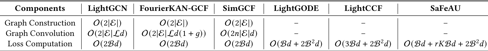
Table 1 把这个差异列得很直接。LightGCN、FourierKAN-GCF 和 SimGCF 都有 Graph Construction 与 Graph Convolution 项；SaFeAU 在这两行都是空，因为它不依赖图传播。Loss Computation 一行中，SaFeAU 相比 LightGODE 的 O(Bd+2B^2d) 多出 rKBd，这是语义因子路由带来的代价。这个表支撑了论文的一个关键主张：SaFeAU 不是“再造一个更复杂的图模型”，而是把监督信号增强嵌入到 MF/AU 的训练流程中。对大规模推荐系统来说，这个差别很重要，因为线上可接受的模型不只看离线指标，还看训练耗时、增量更新难度、推理链路和特征依赖。
最后看附录中的实际训练时间。复杂度表说明 SaFeAU 理论上不依赖图构建和图卷积，但真实训练中 AU 的 batch pairwise 项和 SFR 仍会产生开销，因此需要看 wall-clock 结果。
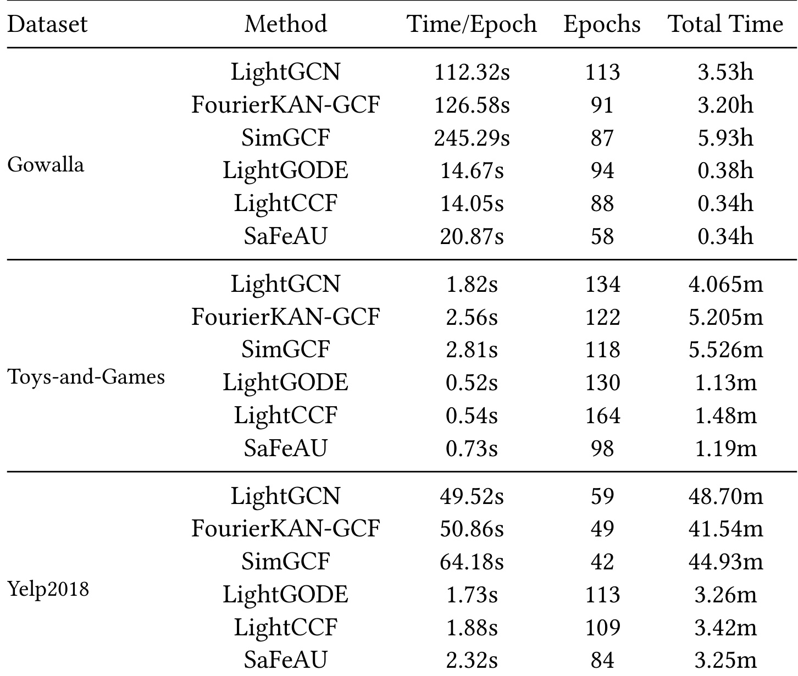
Table 8 显示，在 Gowalla 上，LightGCN 总训练 3.53h，FourierKAN-GCF 3.20h，SimGCF 5.93h；SaFeAU 总训练 0.34h，与 LightCCF 的 0.34h 接近，明显快于 GCN-based 方法。在 Toys-and-Games 上，SaFeAU 总训练 1.19m，略高于 LightGODE 的 1.13m，但低于 LightGCN 的 4.065m 和 SimGCF 的 5.526m。Yelp2018 上，SaFeAU 总训练 3.25m，接近 LightGODE/LightCCF 的 3 分钟级，远低于 GCN 方法的 40-50 分钟级。这个表把论文的效率主张落到了具体时间：SaFeAU 不是最快的 MF 变体，但它用接近 MF 的训练成本获得了比强 GCN 和强 MF 更好的离线效果。
4. 总结
4.1 我的判断
SaFeAU 的价值在于把“false negative”和“高阶协同信号”两个问题用同一个语义因子框架连接起来。它没有直接修补负采样，也没有继续加深图卷积，而是先学习 batch 内共享语义因子，再把与已交互物品共享因子的未交互物品纳入正样本对齐。这个思路对推荐系统很实用：很多线上链路已经习惯 MF/双塔式点积召回或轻量排序，如果能在训练阶段用语义因子扩展监督，而推理阶段仍保持点积打分，就比引入复杂图服务更容易评估和灰度。
4.2 工程启发与复现建议
第一，复现时不要只看 Table 2 主结果，应该优先复现 Table 5 和 Table 6。只有确认 SFM 找到的潜在正样本优于随机扩展，SaFeAU 的“语义”解释才站得住。第二，建议在自己的数据上先固定 K=4、top-k=3、r=4 做起点，再调 \gamma_1，最后调 \gamma_2 和 \delta。第三，线上或准线上验证要注意曝光偏差：未交互不一定是不喜欢，但测试集交互也不等于完整偏好，最好用时间切分、曝光日志或反事实评估进一步验证潜在正样本质量。第四，如果已有 LightGCN/LightCCF/DirectAU 训练框架，可以先把 SaFe 作为监督增强插件接入，而不是一次性替换全模型。
4.3 局限与后续跟进
这篇论文仍有几个风险。其一，语义因子来自 ID embedding 的 batch 几何，不含内容侧语义，因子可解释性有限；“brand/material/texture”更多是直觉例子，不代表模型真的识别了这些属性。其二，batch 内路由会受采样分布影响，热门物品、长尾物品和跨域物品的因子稳定性需要进一步检查。其三，SFM 把潜在正样本直接纳入 alignment，如果某些共享因子对应的是流行度或曝光偏差，可能扩大 popularity bias。其四，论文主要是离线 full-ranking 实验，没有线上 A/B、延迟、增量更新和多目标业务指标证据。其五，代码虽可访问，但本轮没有完整复现实验，实际复现仍要检查数据预处理、RecBole 版本、随机种子和显著性测试。
后续我会重点跟进三件事。第一，看 SaFeAU 在有内容特征或多模态物品 embedding 时能否把语义因子变得更稳定，尤其是短视频、商品和广告素材场景。第二，检查它与 sampled softmax、in-batch negative、hard negative mining 的组合关系，避免语义正样本扩展和负采样策略互相冲突。第三，关注是否有后续工作把 SFM 变成可解释的用户兴趣扩展或召回候选生成模块，而不只是训练损失里的辅助正样本。总体上，SaFeAU 是一篇值得推荐算法方向关注的论文：它没有靠更复杂的图传播堆指标，而是重新审视 CF 监督信号本身，把潜在正样本从“未交互负例”中拿回来。